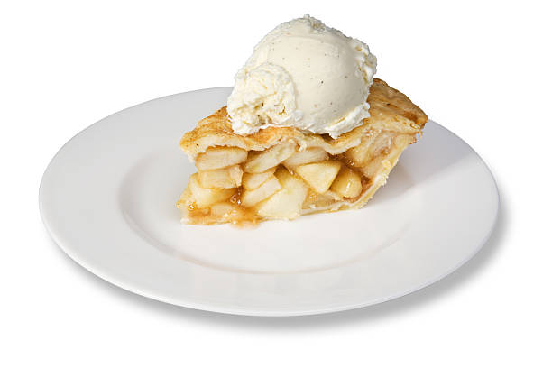

To make this rich mac and cheese recipe healthier we use whole wheat bread crumbs, low-fat milk and cheese, whole wheat noodles, and reduced the amount of butter. Serve with a salad for a healthy meatless dinner
 Healthier Homemade Mac and Cheese
Healthier Homemade Mac and Cheese
This is absolutely the best homemade apple pie you'll ever make! It has a flaky, buttery crust and a tender, lightly-spiced apple pie filling. Use a combination of apples for best flavor, and bake until the top is golden and the filling is bubbly!
 Homemade Apple PieHomemade hot chocolate is a dreamy treat on a cold day. Skip the powdered stuff and make this recipe with real chocolate, whole milk, and vanilla. Top with a dollop of whipped cream.
 Homemade Hot Chocolate
Homemade Hot Chocolate